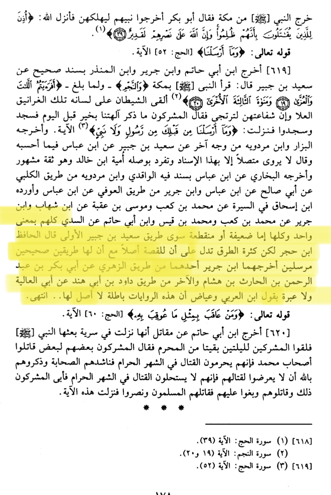
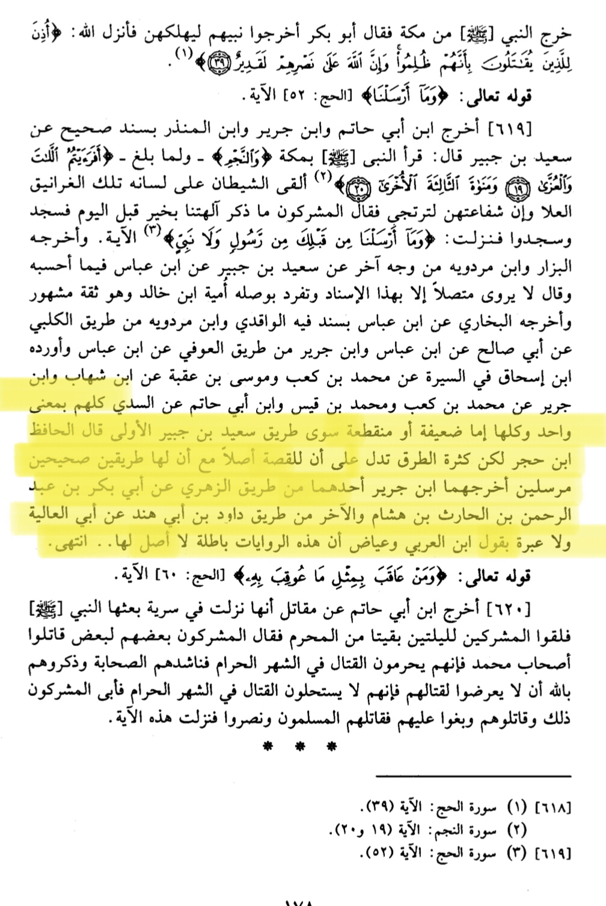

The Satanic verses are in the scholarly books of the Muslims, and this is something which is known among the scholars. The non-Muslims use this to prove acceptance of the narration, although this is far from the truth, let’s see what the scholars said about the narrations in Tafsīr and Tārikh.
al-Tabarī said, “these narrations I have in my books speculate it’s chain and text, do not accept it instantly, as I myself do not know it’s authenticity/reliability”
Ibn Kamāl said, [Translating meaning, not word for word] the books of Tafsīr are filled with narrations that are fabricated, when these scholars are quoting the narrations, they are not intending to say that it is authentic, rather they are just gathering all they can in their books.
Now, it can easily be said that the narration being in tons of books amongst the scholars doesn’t mean that it is accepted.
Muhammad Ibn Ishāq the famous Mudalis has reported the story in his book, al-Sīrah al-Nabawīyyah, does this mean he believed in it? Let’s see what he himself said about it.
It was said that he [Muhammad Ibn Ishāq] himself wrote a book refuting the story, and called it a lie from the Zanādiqah! This is also important to remember, as said earlier, the scholars quoting it in there books doesn’t mean they accepted it.
 Now, let’s deal with the chains of this report. Why did the Muslim scholars weaken it? Was it because of there desires? Let’s see why.
al-Imām al-Hāfidh Ibn Kathīr says in his Tafsīr that this report all come from the route of Marasīl, and none of the chains of this report are authentic. In addition, al-Qurtubī also says in his Tafsīr that there’s nothing authentic in these narrations, they are all weak and rejected.
This means there was a Tabi’ī who attributed it to the Prophet ﷺ without a Sahābī in the chain, as it’s not possible for a Tabi’ī to report directly from the Prophet. In addition, since there is no Sahābī in the chain to connect the Marasīl from the Tabi’īeen, the narration’s automatically become acceptable to Ahl al-Hadīth, as they only accept Marasīl from Sahābah. [See the beginning of the highlight from second page].
Now, let’s deal with the chains of this report. Why did the Muslim scholars weaken it? Was it because of there desires? Let’s see why.
al-Imām al-Hāfidh Ibn Kathīr says in his Tafsīr that this report all come from the route of Marasīl, and none of the chains of this report are authentic. In addition, al-Qurtubī also says in his Tafsīr that there’s nothing authentic in these narrations, they are all weak and rejected.
This means there was a Tabi’ī who attributed it to the Prophet ﷺ without a Sahābī in the chain, as it’s not possible for a Tabi’ī to report directly from the Prophet. In addition, since there is no Sahābī in the chain to connect the Marasīl from the Tabi’īeen, the narration’s automatically become acceptable to Ahl al-Hadīth, as they only accept Marasīl from Sahābah. [See the beginning of the highlight from second page].
 Now, let’s get into the chains that the report has come to us with, and prove there weakness.
The First variant of the chain is containing a man called Abī al-‘Ālīyyah, and he is the one who is narrating the incident. First of all, this man was born 18 years after the incident happened, how would it be possible for him to narrate it? One could say someone told him, and we agree, but who told him? Since we can’t verify the individual who told him, meaning whether if he’s trustworthy or not, then the narration is unacceptable. This narration is Mursal, not accepted since there’s no Sahābī to connect it.
Another variant of the event comes from Muhammad Ibn K’ab al-Qurathī, and he was born 38 years after the event took place, so who did he get it from? We don’t know, therefore narration is mursal. He also narrated another variant of the report, and the same response is given.
[Continuation]
Qatādah also narrates the incident, he was born 70 years after the incident, so who did he get it from? We don’t know. Again it’s Mursal. Even if it was to be an authentic Isnād, Qatādah is from the Mudalisīn whom their reports are not accepted from.
Another variant of the incident which is mostly quoted comes from Sa’īd Ibn Jubayr, he was born almost 54 years after the incident, so again it’s Mursal, we have no idea where he got it from. The Kuffār respond by quoting a chain where he is connecting it to Ibn ‘Abbas, only issue is Ibn Abbas was born 3 years after the event took place, so how is he going to witness it?
Now, let’s get into the chains that the report has come to us with, and prove there weakness.
The First variant of the chain is containing a man called Abī al-‘Ālīyyah, and he is the one who is narrating the incident. First of all, this man was born 18 years after the incident happened, how would it be possible for him to narrate it? One could say someone told him, and we agree, but who told him? Since we can’t verify the individual who told him, meaning whether if he’s trustworthy or not, then the narration is unacceptable. This narration is Mursal, not accepted since there’s no Sahābī to connect it.
Another variant of the event comes from Muhammad Ibn K’ab al-Qurathī, and he was born 38 years after the event took place, so who did he get it from? We don’t know, therefore narration is mursal. He also narrated another variant of the report, and the same response is given.
[Continuation]
Qatādah also narrates the incident, he was born 70 years after the incident, so who did he get it from? We don’t know. Again it’s Mursal. Even if it was to be an authentic Isnād, Qatādah is from the Mudalisīn whom their reports are not accepted from.
Another variant of the incident which is mostly quoted comes from Sa’īd Ibn Jubayr, he was born almost 54 years after the incident, so again it’s Mursal, we have no idea where he got it from. The Kuffār respond by quoting a chain where he is connecting it to Ibn ‘Abbas, only issue is Ibn Abbas was born 3 years after the event took place, so how is he going to witness it?


 [Continuation]
In al-Imām ad-Dārimī’s book, Naqd al-Dārimī ‘Alā Bishr al-Marīsī, the Noter says about the chain from Sa’īd Ibn Jubayr to Ibn ‘Abbas, it is from the worst of chains. It is either weak or fabricated.
[Continuation]
In al-Imām ad-Dārimī’s book, Naqd al-Dārimī ‘Alā Bishr al-Marīsī, the Noter says about the chain from Sa’īd Ibn Jubayr to Ibn ‘Abbas, it is from the worst of chains. It is either weak or fabricated.
 [Continuation]
Another variant they bring,
From Āmīyyh Ibn Khālid said, from Shu’bah, from Abī Bishr [Sadūq but was well known for being a Shī’i], From Sa’īd Ibn Jubayr To Ibn Abbas, where I doubt how/if he heard it.
The scholar then comments on the narration, "And we do not know that this Hadith is transmitted with a connected chain to the Prophet so its mention is permissible except by this chain and we do not know of any other source for this Hadith from Shu'bah... except through Umayyah..."
As we see here, there is doubt in the chain from the narrator, Sa’īd Ibn Jubayr. In the science of hadīth, if narrator himself doubts the wusūl, the narration is no longer acceptable.
[Continuation]
Another variant they bring,
From Āmīyyh Ibn Khālid said, from Shu’bah, from Abī Bishr [Sadūq but was well known for being a Shī’i], From Sa’īd Ibn Jubayr To Ibn Abbas, where I doubt how/if he heard it.
The scholar then comments on the narration, "And we do not know that this Hadith is transmitted with a connected chain to the Prophet so its mention is permissible except by this chain and we do not know of any other source for this Hadith from Shu'bah... except through Umayyah..."
As we see here, there is doubt in the chain from the narrator, Sa’īd Ibn Jubayr. In the science of hadīth, if narrator himself doubts the wusūl, the narration is no longer acceptable.


 [Continuation]
al-Bazzar, the scholar who quoted the chain, said in the yellow, ".. Apart from Umayyah, he [Yusuf Ibn Hammad] narrated from Abu Bishr from Sa'eed Ibn Jubayr a disconnected [report], and this Hadith is also known from Al Kalbi from Abu Salih from Ibn 'Abbas, and Umayyah is a famous thiqah [narrator]."
Who is al-Kalbī? Is he Thiqah? Let’s see… al-Qadī ‘Iyyad said he was a liar, and his narrations are nothing. Essentially what’s being said is he is extremely weak.
[Continuation]
al-Bazzar, the scholar who quoted the chain, said in the yellow, ".. Apart from Umayyah, he [Yusuf Ibn Hammad] narrated from Abu Bishr from Sa'eed Ibn Jubayr a disconnected [report], and this Hadith is also known from Al Kalbi from Abu Salih from Ibn 'Abbas, and Umayyah is a famous thiqah [narrator]."
Who is al-Kalbī? Is he Thiqah? Let’s see… al-Qadī ‘Iyyad said he was a liar, and his narrations are nothing. Essentially what’s being said is he is extremely weak.
 [Continuation]
al-Imām Ibn al-Jawzī rejected the story and said there is nothing authentic about it, it is not possible for the Prophet to do such an act, and he is infallible. He also says “Even if one was to argue that it is authentic, it would be said that the Shayātīn recited it like this, and some heard it in this manner” Note that this is something Ibn Hajar al-ʿAsqalānī said.
al-Imām al-‘Ādil said in his book, quoting Imām al-Khatīb, Ahl al-Tahqīq have said, This report is from the fabrications and lies.
[Continuation]
al-Imām Ibn al-Jawzī rejected the story and said there is nothing authentic about it, it is not possible for the Prophet to do such an act, and he is infallible. He also says “Even if one was to argue that it is authentic, it would be said that the Shayātīn recited it like this, and some heard it in this manner” Note that this is something Ibn Hajar al-ʿAsqalānī said.
al-Imām al-‘Ādil said in his book, quoting Imām al-Khatīb, Ahl al-Tahqīq have said, This report is from the fabrications and lies.
 Another full isnad to this story but it has a majhool it was criticized in nasb al-majanik
What is the meaning of 22:52 then if قصة الغرانيق is all a fabrication and lie?
al-Imām Fakhr al-Dīn ar-Râzi said in his Tafsīr,
”And if it is explained as referring to inner thoughts and desires, then it means that if the Prophet wished for some things, Shaytan tries to tempt him with falsehood and call him to that which he should not be called to, then Allah the Exalted overrides this and makes it futile and guides him away from the temptations."
al-Imām al-Mujjadid ash-Shawkānī said,
"And if we assume that the meaning of تمنى is wishing [something for] himself as is stated by Al-Farra and Al-Kisa’i, then this means that if he desires for himself something, Shaytan speaks and makes the people hear [something] that which did not come from the tongue of the Messenger of Allah, peace and blessings of Allah be upon him and his family."
https://www.tiktok.com/@musliwarrior/video/7076964876618435846?is_from_webapp=1&sender_device=pc&web_id=7128636678717801985
https://youtu.be/GGkG_cqGnLU
Another full isnad to this story but it has a majhool it was criticized in nasb al-majanik
What is the meaning of 22:52 then if قصة الغرانيق is all a fabrication and lie?
al-Imām Fakhr al-Dīn ar-Râzi said in his Tafsīr,
”And if it is explained as referring to inner thoughts and desires, then it means that if the Prophet wished for some things, Shaytan tries to tempt him with falsehood and call him to that which he should not be called to, then Allah the Exalted overrides this and makes it futile and guides him away from the temptations."
al-Imām al-Mujjadid ash-Shawkānī said,
"And if we assume that the meaning of تمنى is wishing [something for] himself as is stated by Al-Farra and Al-Kisa’i, then this means that if he desires for himself something, Shaytan speaks and makes the people hear [something] that which did not come from the tongue of the Messenger of Allah, peace and blessings of Allah be upon him and his family."
https://www.tiktok.com/@musliwarrior/video/7076964876618435846?is_from_webapp=1&sender_device=pc&web_id=7128636678717801985
https://youtu.be/GGkG_cqGnLU


 https://apostolicislam.substack.com/p/the-satanic-verses-a-definitive-refutation?sd=pf
Did Al Jalalayn/Imam Suyuti believe in the Satanic Verses?
Some polemicists will quote Tafsir Al Jalalayn and claim that he believed in the story. However just because a mufassir quotes a story that doesn’t mean he actually believes in it. Al Jalalayn doesn’t say he believes the story rather he’s merely quoting it. Mufassiroon would often quote things that they don’t agree with it.
The evidence that Al Jalalayn didn’t believe in the story is in his book Asbab Al Nuzul where he says that the story is weak
👇
“All these narrations with this meaning (satanic verses) are all da’if or mursal or munqatii wether from muhammed bin kaab saaid bin Al-Jubayr and there is no thing taken from ibn Hajar if he says it is sahih (authentic) , I personally don’t see any of these as being authentic from the lies of kuffar. Done”
Lbab Al-Neqool fi asbab Al-Nezool Al sioyuti (RH) page number 178 reference number 619 (underlined text) so no no authentic narration of these

https://apostolicislam.substack.com/p/the-satanic-verses-a-definitive-refutation?sd=pf
Did Al Jalalayn/Imam Suyuti believe in the Satanic Verses?
Some polemicists will quote Tafsir Al Jalalayn and claim that he believed in the story. However just because a mufassir quotes a story that doesn’t mean he actually believes in it. Al Jalalayn doesn’t say he believes the story rather he’s merely quoting it. Mufassiroon would often quote things that they don’t agree with it.
The evidence that Al Jalalayn didn’t believe in the story is in his book Asbab Al Nuzul where he says that the story is weak
👇
“All these narrations with this meaning (satanic verses) are all da’if or mursal or munqatii wether from muhammed bin kaab saaid bin Al-Jubayr and there is no thing taken from ibn Hajar if he says it is sahih (authentic) , I personally don’t see any of these as being authentic from the lies of kuffar. Done”
Lbab Al-Neqool fi asbab Al-Nezool Al sioyuti (RH) page number 178 reference number 619 (underlined text) so no no authentic narration of these

Did Ibn Hajr Al Asqalani believe in the Satanic Verses?
Some may try to appeal Ibn Hajar's argument regarding the story being authentic because the many weak chains when looked at together gives the story a basis. However, Sheikh Dr. Emad Sayed Al Sharbeeni in his book Radd Al Shubuhaat Hawl 'Asmatil Nabi Fi Daw' al Qur'an wal Sunnah, pp. 355-356 responds back to Ibn Hajar by presenting the two following points.
As Ibn Hajar admits himself, not all accept mursal narrations. Imam Muslim in his introduction to Saheeh Muslim said that mursal narrations cannot be held as authoritative. (Bab: Sihhatil Ehtijaaj bil Hadeeth Al Mu'n'in, 1/163) Ibn Salaah said that mursal narrations are just like weak hadeeth, they cannot be used as evidence unless you have authentic narrations from somewhere else to strengthen it. ('Uloom Al Hadeeth, p. 49) Different schools of thought have put different conditions in regards to accepting mursal narrations. Thus, not all Muslims are required to believe this story, for it cannot be proven to be authentic in a clear-cut manner.
Acceptance of mursal narrations are only debated when it comes to matters of Fiqh (jurisprudence) and not matters in Aqeedah (theology) that demand clear cut proof and certainty, which the mursal narrations solely cannot provide despite having a good chain of transmission. If one were to visit this link and see the different opinions of scholars regarding mursal narrations, you will realize that it is in relation to matters of acts of worship (jurisprudence) and not theology.
Thirdly, pp. 696-698 of Dr. Mohar Ali's book The Biography of the Prophet and the Orientalists, shows that the matn (content) of the narrations are different when they are compared with each other. Keeping minor differences aside, there are major differences in regards to the occasion of the incident, nature of the Prophets' alleged act, wording of the alleged "satanic verses" and their effect or sequel. Thus, this gives us greater confidence in the fact that the missing person in the mursal narration is indeed a weak narrator.
——
Did Ibn Taymiyaah believe the Satanic Verses?
Ibn Taymiyaah affirmed a different version of the story in which Muhammad peace be upon him never even recited the Satanic Verses rather it was Satan deceiving the pagans. Ibn Taymiyaah does not affirm the version that Anti-Islam polemicists love to use so much
Dr. Mohar Ali interestingly points out in his book The Biography of the Prophet and the Orientalists, page 700:
Significantly enough, some versions of the story clearly state that the "satanic verses" were uttered not by the Prophet but by satan or some unbelievers at the time of the Prophet's recitation of the surah. Even the version said to have been transmitted by Urwah ibn al-Zubayr says first that it was "thrown in" by satan without mentioning "on the tongue of the Prophet", and later on specifically stating that "the Muslims did not hear what satan threw in on the tongues of the polytheists" (الْمُشْرِكِين لسنةأ َ وَلَمْ يَكُنْ الْمُسْلِمُونَ سَمِعُوا الَّذِي أَلْقَى الشَّيْطَان فِي) [2]. The same information is given in the version coming from Ibn Shihab al-Zuhri wherein it is stated: "The Muslims did not hear what the devil threw in the hearing of the unbelievers" (وَلَمْ يَكُنْ الْمُسْلِمُونَ سَمِعُوا الَّذِي أَلْقَى الشَّيْطَان فِي مَسَامِع الْمُشْرِكِينَ)[3]Rightly, therefore, Ibn Taymiyyah categorically states that the alleged couplet was put by satan into the hearing of the unbelievers. [4]
2) Al-Tabarani, Majma' etc., VI, 32-34; VIII, 70-72, Also quoted in Al-Albani, op.cit., 12-13
3) Ibn Kathir, Tafsir,
4) Ibn Taymiyyah, Majmu' at Fatawa, II, 282.
Dr. Mohar Ali also notes on page 697:
“Yet other versions state that it was neither the Prophet, nor Satan, but someone from among the unbelievers who uttered the alleged verses when the Prophet had just completed the recitation of ayah 19 of the surah.”
He argues on page 700:
“A second fact which needs emphasizing in this connection is that the text of the so-called "satanic verses" was no new composition made on the occasion mentioned. It was an old couplet which the Quraysh pagans used to recite in praise of their goddesses while circumambulating the Ka'ba. [1] It is also to be remembered that the unbelievers used to create noise and disturbances whenever the Prophet or the Muslims recited the Qur'an publicly. Therefore, it is very likely that when the Prophet recited the surah and mentioned Al-Lat and Al-'Uzza in the course of his recitation and in a denunciatory strain, some of the Quraysh unbelievers instantly interrupted and protested by shouting out the couplet.
1) Ibn al-Kalbi, Kitab al-Asnam, ed. Ahmad Zaki Pasha, p.19, Yaqut, Mu'jam al-Buldan, IV, 116.
So here we see that other versions of the Satanic Verses story destroy these Anti-Islam Polemicists’ conclusions and arguments. What objective scientific and historical methodology are they utilizing for insisting that the version of the story that they appeal to so much is correct and not these other versions? (PS: I don't accept any of these stories).
https://m.youtube.com/watch?v=M1ylgiVAc6I&t=1s